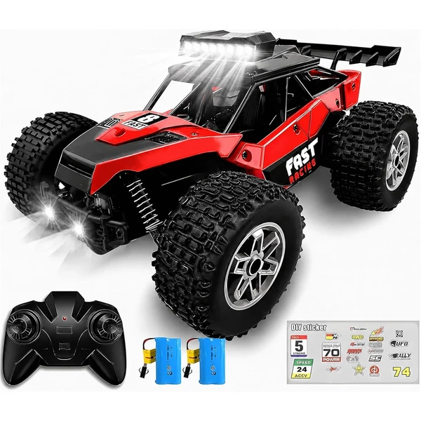
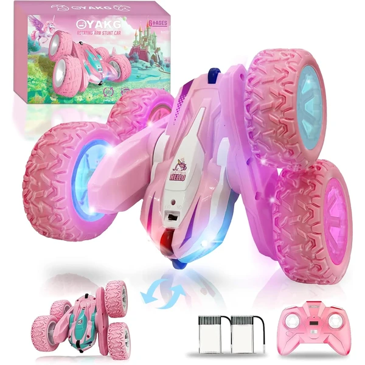
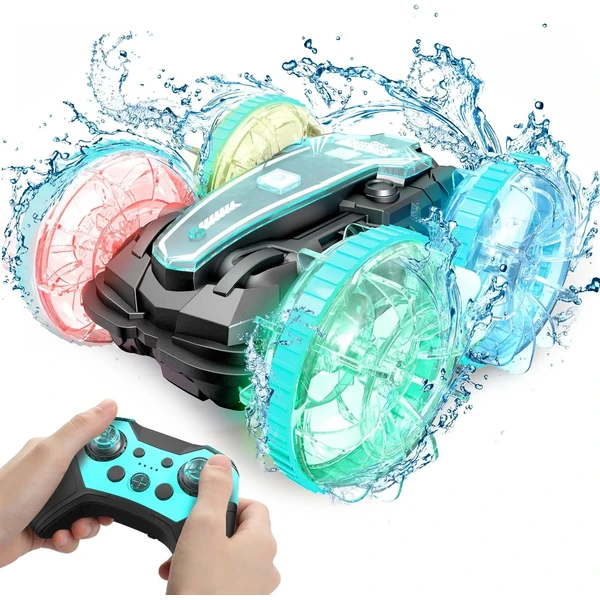
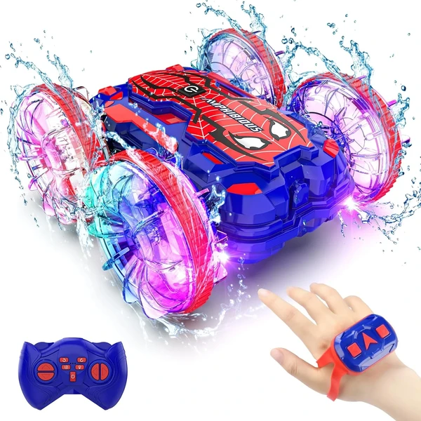

QUNREDA Coche RC Stunt
Un coche de acrobacias 4WD con baterías modulares recargables por USB-C. Incluye dos baterías de 25 minutos cada una, permitiendo hasta 50 minutos de juego continuo. Capaz de hacer giros de 360° y acrobacias multidireccionales con luces LED.
⭐ ¿Por qué nos gusta?
- ✔ Baterías modulares con carga USB-C rápida.
- ✔ Acrobacias de 360° y rotaciones multidireccionales.
- ✔ Alcance de 50 metros sin interferencias.
💬 Lo que más destacan las familias
Muchos padres coinciden en que las baterías modulares son un cambio importante: se pueden cambiar en segundos sin herramientas para jugar sin parar. El control de acrobacias resulta accesible incluso para principiantes.
Ver en Amazon

Rodzon Coche Teledirigido Acrobático
Un coche de acrobacias a alta velocidad con rotación de 360°. Incluye luces LED en los faros delanteros y en los neumáticos para jugar de día o de noche. Dos baterías recargables permiten 40-60 minutos de juego total.
⭐ ¿Por qué nos gusta?
- ✔ Luces LED en faros y neumáticos.
- ✔ Rotación de 360° y acrobacias a velocidad.
- ✔ Control anti-interferencias 2,4 GHz.
💬 Lo que más destacan las familias
Una de las cosas más comentadas es lo vistosa que resulta la iluminación de los neumáticos, especialmente en espacios con poca luz. También se valora que aguante bien en distintos terrenos, incluso en hierba o arena.
Ver en Amazon

KINSAM Coche RC 25 km/h
Un coche de control remoto con motor potente capaz de alcanzar 25 km/h. Batería mejorada de 1000 mAh ofrece 30 minutos de conducción. Sistema 4x4 con amortiguadores y parachoques delanteros y traseros resistentes.
⭐ ¿Por qué nos gusta?
- ✔ Velocidad máxima de 25 km/h.
- ✔ Alcance de control remoto de 60-80 metros.
- ✔ Construcción robusta con amortiguadores.
💬 Lo que más destacan las familias
Lo que más suele gustar es la velocidad que alcanza: es notablemente más rápido que otros modelos. Los padres también valoran que el alcance del control remoto permite jugar en espacios amplios sin perder el control.
Ver en Amazon

KINSAM Coche RC 20 km/h con 2 Baterías
Coche de control remoto con aceleración proporcional y velocidad máxima de 20 km/h. Incluye dos baterías de 1000 mAh que ofrecen 60 minutos de juego total. Luces LED 3A en la carrocería y diseño clásico en mango.
⭐ ¿Por qué nos gusta?
- ✔ Dos baterías: 60 minutos de juego total.
- ✔ Aceleración proporcional para mejor control.
- ✔ Luces LED y diseño nostálgico en mango.
💬 Lo que más destacan las familias
No es raro encontrar comentarios sobre lo útil que resulta tener dos baterías: mientras una carga, se sigue jugando. El control remoto tipo mango clásico resulta más cómodo para muchos niños que otros diseños.
Ver en Amazon

Coche Teledirigido Unicornio 4WD
Un coche de acrobacias con diseño único de unicornio rosa y blanco. Capaz de giros, volteretas y demostraciones automáticas con velocidad máxima de 15 km/h. Incluye dos baterías recargables de 800 mAh y luces LED llamativas.
⭐ ¿Por qué nos gusta?
- ✔ Diseño exclusivo de unicornio, muy llamativo.
- ✔ Acrobacias automáticas y giros de 360°.
- ✔ Dos baterías para 40 minutos de juego.
💬 Lo que más destacan las familias
Una característica muy mencionada es el diseño especial de unicornio que fascina especialmente a las niñas. El coche resulta muy resistente a caídas y golpes, y las acrobacias automáticas entretienen incluso sin estar pendiente del mando.
Ver en Amazon

Korffe Coche Teledirigido Todoterreno
Un coche 4WD con rotación de 360° y diseño impermeable, pensado para circular en cualquier terreno. Control remoto de 2,4 GHz para una conducción precisa y sin interferencias.
⭐ ¿Por qué nos gusta?
- ✔ Diseño impermeable, apto para cualquier terreno.
- ✔ Rotación de 360° en las cuatro ruedas.
- ✔ Control 2,4 GHz sin interferencias.
💬 Lo que más destacan las familias
Se repite bastante el comentario de que el diseño impermeable da mucha libertad para jugar sin preocuparse por el terreno, incluso con charcos o hierba mojada. Es una buena opción para quienes buscan un coche resistente para el exterior.
Ver en Amazon

Coche Teledirigido Anfibio Spider
Un coche todoterreno con forma de araña que también puede circular sobre el agua como una barca. Se controla con mando tradicional o con un reloj sensor de gestos, permitiendo acrobacias como giros de 360° y saltos.
⭐ ¿Por qué nos gusta?
- ✔ Circula tanto en tierra como en el agua.
- ✔ Se controla con mando o con gestos de la mano.
- ✔ Diseño resistente al agua y anticolisión.
💬 Lo que más destacan las familias
Un detalle que aparece una y otra vez es lo sorprendente que resulta verlo circular por el agua como si fuera una barca. El control por gestos con el reloj también fascina a los niños, que lo describen como algo muy novedoso.
Ver en Amazon